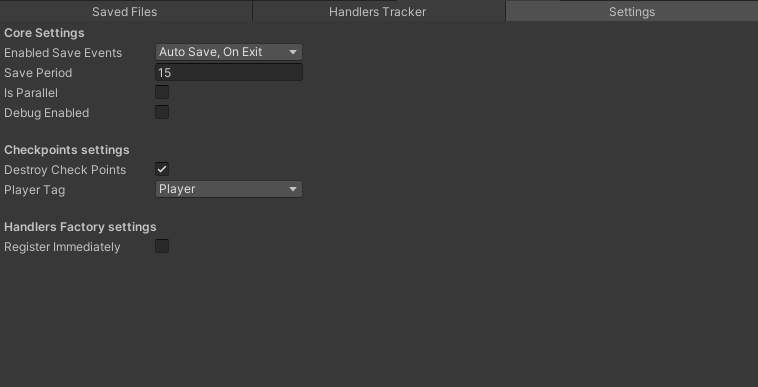

The Save System Core
All this time you were forced to manually handle objects.
But now you can create handler and pass it into the
SaveSystemCore
The SaveSystemCore is the system which supports 6 saving methods:
- Quick-save - just call
QuickSave()method or bind any key usingBindKey(KeyCode keyCode)method. - Save at checkpoint - when the player reaches any checkpoint, the Core will automatically save the game.
- Auto save -
SaveSystemCorecan save the game automatically during each period which you configure usingSavePeriodproperty. - Save on exit - also it can save the game during the quitting.
- Save on focus lost - if the application loses focus
(ex. the player minimized the app),
SaveSystemCorewill save the game immediately. - Save on low memory - if there is low memory left on the device, the application receives a notification and the game will be saved.
Internally, the SaveSystemCore uses ObjectHandler and AsyncObjectHandler
to save. So it can do this, you should register handlers.
SaveSystemCore.RegisterObjectHandler(m_handler);
SaveSystemCore.RegisterAsyncObjectHandler(m_asyncHandler);
Also you can enable RegisterImmediately property in
ObjectHandlersFactory and then create handlers.
ObjectHandlersFactory.RegisterImmediately = true;
ObjectHandlersFactory.CreateHandler(filePath, objects); // this handler will be registered automatically
ObjectHandlersFactory.CreareAsyncHandler(filePath, asyncObjects); // and this
Save Events
The auto save, save on exit, save on focus lost and save on low memory
are events which you can configure using the EnabledSaveEvents property
in the SaveSystemCore.
SaveSystemCore.EnabledSaveEvents = SaveEvents.AutoSave | SaveEvents.OnExit;
// if you want to enable all events
SaveSystemCore.EnabledSaveEvents = SaveEvents.All;
Parallel saving
To speed up saving on multi-core devices,
you can enable IsParallel property.
SaveSystemCore.IsParallel = true;
Important
Not recommended unless your objects are thread safe.
Other parameters
Also you can enable debug messages from SaveSystemCore.
SaveSystemCore.DebugEnabled = true;
It will write all logs in the debug console (warnings and errors will be written regardless of settings).
Configure checkpoints destroying after saving at checkpoint:
SaveSystemCore.DestroyCheckPoints = true;
And pass player tag (is used to filtering messages from triggered checkpoints):
SaveSystemCore.PlayerTag = "Player";
Configure all parameters in code:
SaveSystemCore.ConfigureParameters(
enabledSaveEvents: SaveEvents.AutoSave | SaveEvents.OnExit,
isParallel: false,
debugEnabled: false,
destroyCheckPoints: true,
playerTag: "Player",
savePeriod: 15
);
All these parameters you can configure in the console:

Save on exit
It’s worth mentioning separately about saving before exiting the game.
Since there is no way to wait saving asynchronously in this case,
the SaveSystemCore run saving of async handlers on the thread pool
and waits them in the main thread. Because saving run on the thread
pool, your async objects must be thread safe. But otherwise
you can call SaveAndQuit():
await SaveSystemCore.SaveAndQuit();
// there shouldn't be any code after this as SaveSystemCore will close the application
However, it isn't always known when to call it: the player can exit the game at any time in any way, so automatic saving may be more reliable (but you can combine these methods, manual saving cancels automatic saving). Anyway the choice is yours.
Observe progress
You can pass IProgress<float> object in the same way you pass it to
handlers:
SaveSystemCore.ObserveProgress(m_savingProgress);
And you can subscribe to 2 events - OnSaveStart and OnSaveEnd:
SaveSystemCore.OnSaveStart += saveType => {
if (saveType == SaveType.AutoSave)
// some actions
if (saveType == SaveType.SaveAtCheckpoint)
// and so on
}
SaveSystemCore.OnSaveEnd += saveType => {
// similarly
}